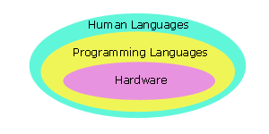
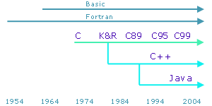
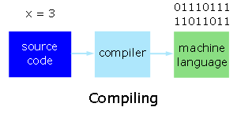
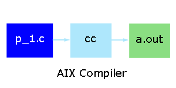
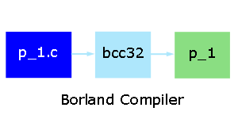
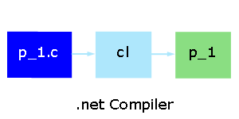

|
Development |

|
|
Languages and C Compilers Use operating system utilities to edit, compile and run programs "C is quirky, flawed and an enormous success." (Dennis Ritchie) Languages | Why C First? | Compiling C | C Features | ExercisesPrograms that perform relatively simple tasks and are written in assembly language contain a large number of statements. Assembly language is a low-level language. That is, it is close to the hardware. To make our programs shorter, we use higher-level languages. Programming Languages Hardware can only interpret its own native machine language. The continuum between hardware and human languages is occupied by a variety of programming languages of different levels.  We can group the programming languages into five distinct generations:
The third, fourth and fifth generation languages are high-level languages: they have no direct connection to the machine languages. To make our programs portable and maintainable, we resort to higher-level languages. Their instructions are more English-like than machine-like. Each third generation language statement is equivalent to about 5-10 machine language statements. Each fourth generation language statement is equivalent to about 30-40 machine language statements. The higher the level, the closer to the human languages and the further from native machine langauges. Popular third generation languages over the years have been Fortran, Cobol, Algol, Visual Basic, Pascal, C, C++ and Java. C++ and Java are built upon C syntax. Popular fourth generation languages include SQL, Prolog and Matlab.  Eric Levenez maintains an up-to-date map of about 50 of the more popular languages. O'Reilly has a color version. Interpreters and Compilers When we code a program in a high level language, we write source code. We translate this code into machine language statements using either
Compilers are more complicated. They translate the entire set of high level statements into an equivalent set of machine language statements (without executing any of the statements) and produce a separate executable file. We execute that file separately afterwards. Compilers can produce optimized results. To create a machine language program from C source code, we use a compiler.  Why C as a First Language? C is one of the most popular languages in use globally. TIOBE Software tracks the currently most popular languages and long-term trends based on world-wide availability of software engineers as calculated from Google, Yahoo! and MSN search engines. Some reasons for learning programming using the C language include:
Comparative times for a Sieve of Eratosthenes test (after Hergert and Thibeault, 1998)
Compiling C Programs Let us write a simple C program that displays the phrase "This is BTP100" and name our source file p_1.c. Then, let us compile our source code using three different compilers. phobos (AIX operating system) On phobos, we use the cc compiler and suffix the source file name with '.c'. To create the source file, login to phobos and start the nled text editor using the command
To create a machine language version of our program, we use the cc compiler
 The a.out file contains the machine language version of our program. (Interestingly, a.out stands for the output file from the assembler.) To run the machine language version of our program, we enter
Borland Now, let us compile our source code on our local computer using the Borland command line compiler. To install this compiler on your local computer, see the resources page here. To move our program from phobos to the \temp directory of our local computer, we use the ftp service. See the resources page here for detailed information on ftping files. To access the Borland compiler, select the bcc icon on the Desktop. To find our file, we move to the \temp directory.
 The compiler produces a file named p_1 (p_1.exe) that contains the machine language version of our source code. To execute this machine language version, we enter
cl Finally, let us compile the same source code on our local computer using the Microsoft .net compiler. To access the .net cl compiler, select the Visual Studio .net 2003 Command Prompt icon on the Desktop or select Start > All Programs > Visual Studio .NET > Visual Studio .NET Tools > Visual Studio .NET Command Prompt At the prompt, we enter
 The compiler produces a file named p_1 (p_1.exe) that contains the machine language version of our source code. To execute this machine language version, we enter
File Sizes The sizes of the machine language files produced by the three compilers differ, even though the source code remains the same across the different platforms. Note the considerable variation. Standards From time to time compiler writers agree to follow certain standards in order to facilitate source code portability across different platforms. The most recent standard to which C compiler writers try to adhere is ANSI/ISO 9899-1999 or C99 for short. If we write our source code to this standard or even better the earlier C89, we can expect our code to compile on most platforms. Some Notable Features Let us dissect the source code for our first program. Comments The source code includes some comments. We use the pair /* and */ to surround our comments. In these comments, we may include any characters and may span any number of lines, but may not include other /* sequences.
Whitespace Our source code includes whitespace. The term whitespace refers to any of:
C compilers ignore all whitespace. We may introduce whitespace anywhere except within a literal string or an identifier. In our source code, the literal string is the set of characters enclosed in double quotes ("This...100\n"). The names main and printf are identifiers:
Case Sensitivity The C language is case sensitive. C compilers treat the character 'A' as different from the character 'a'. Try to change the identifier printf to PRINTF and recompile. Note the error message. Now, fix this error and change "This to "THIS and recompile. Note how we can change the case of a literal string or a comment without introducing an error. A compiler's ability to trap our mistakes is rather important in testing and debugging. The mistakes that compilers trap do not make it through to the production version of a program. Exercises
|
|
|
Top
|
|
|
Next: Variables
|
| Designed by Chris Szalwinski | Copying From This Site |